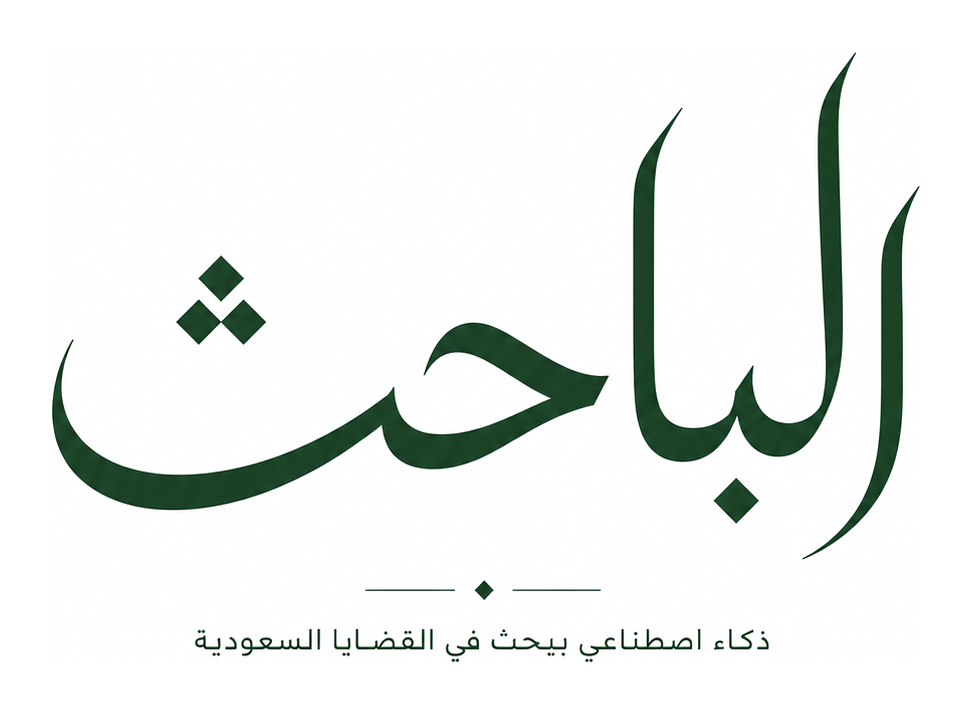
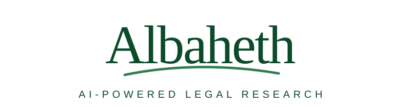

بحث دلالي
الوصول إلى الأحكام ذات الصلة بناءً على المعنى، وليس الكلمات المطابقة فقط.
يساعد الباحث القانونيين على الوصول إلى الأحكام القضائية السعودية وفهمها واستكشافها من خلال البحث الدلالي والذكاء الاصطناعي المسؤول.

الوصول إلى الأحكام ذات الصلة بناءً على المعنى، وليس الكلمات المطابقة فقط.
تصفية النتائج حسب المحكمة والمدينة والسنة ودرجة التقاضي.
استكشاف المحتوى القانوني مع إبقاء المصادر الأصلية واضحة وقابلة للتحقق.

يعتمد النظام البصري على اللون الأخضر الداكن، والمساحات البيضاء، والطباعة الهادئة، وهو مناسب لمنتج قانوني تقني ثنائي اللغة.